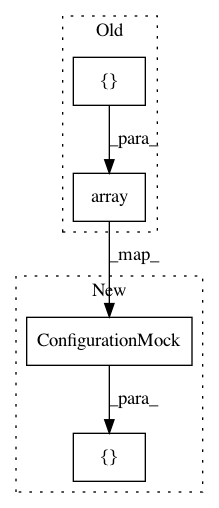

b59686541fa599286c80693c0a382bc10c6d92bb,test/test_smbo/test_acquisition.py,TestLogEI,test_1xD,#TestLogEI#,71
Before Change
def test_1xD(self):
self.ei.update(model=self.model, eta=1.0)
X = np.array([[1.0, 1.0, 1.0]])
acq = self.ei(X)
self.assertEqual(acq.shape, (1, 1))
self.assertAlmostEqual(acq[0][0], 0.056696236230553559)
After Change
def test_1xD(self):
self.ei.update(model=self.model, eta=1.0)
configurations = [ConfigurationMock([1.0, 1.0, 1.0])]
acq = self.ei(configurations)
self.assertEqual(acq.shape, (1, 1))
self.assertAlmostEqual(acq[0][0], 0.056696236230553559)
In pattern: SUPERPATTERN
Frequency: 3
Non-data size: 4
Instances
Project Name: automl/SMAC3
Commit Name: b59686541fa599286c80693c0a382bc10c6d92bb
Time: 2017-11-16
Author: feurerm@informatik.uni-freiburg.de
File Name: test/test_smbo/test_acquisition.py
Class Name: TestLogEI
Method Name: test_1xD
Project Name: automl/SMAC3
Commit Name: b59686541fa599286c80693c0a382bc10c6d92bb
Time: 2017-11-16
Author: feurerm@informatik.uni-freiburg.de
File Name: test/test_smbo/test_acquisition.py
Class Name: TestEI
Method Name: test_1xD
Project Name: automl/SMAC3
Commit Name: b59686541fa599286c80693c0a382bc10c6d92bb
Time: 2017-11-16
Author: feurerm@informatik.uni-freiburg.de
File Name: test/test_smbo/test_acquisition.py
Class Name: TestEI
Method Name: test_1x1